.png)
THE NEW ORDER REBORN
Under the visionary leadership of Emperor Draxus Thorne, the Galactic Imperium has risen from the ashes to bring absolute order to the Northern Outer Rim.
Rise of Draxus Thorne
Following Palpatine's death and Operation: Cinder, the Empire shattered. By 9 ABY, Moff Gideon's demise created a vacuum. Draxus Thorne, an Admiral-turned-Moff, seized the Shadow Council by poisoning dissenting warlords on Bastion, framing a survivor, and uniting the remnants.
Thorne purged the incompetent, reclaimed Mandalore, executed remaining resistance (including Din Djarin), and declared himself Emperor with Bastion as his capital.
A Pragmatic Doctrine
Thorne discarded the Tarkin Doctrine and scaled back xenophobia. The Imperial Army became a standardized defense force open to all species, while the elite Stormtrooper Corps remained restricted to humans and humanoids, the Imperium's primary offensive fist.
To fuel expansion, uninhabited worlds are strip-mined using automated Ore Crawlers (World Devastators), rapidly feeding the Imperium's modernized war machine.
The Fall of Skywalker (12 ABY)
Recognizing the threat of Luke Skywalker's progressive New Jedi Order on Yavin 4, Emperor Thorne launched a massive, jammer-supported invasion. To save his students from orbital bombardment and overwhelming infantry, Skywalker surrendered himself into Imperial custody.
Thorne took Skywalker to Bastion and publicly executed the Jedi Grandmaster via decapitation on the HoloNet. This bold act crippled southern remnant morale, driving thousands of Imperial holdouts into Thorne's ranks. Now, in 17 ABY, the galaxy is locked in a tense Cold War between the Imperium and the recovering New Republic.
MILITARY STRUCTURE
Standardized Combat Unit Hierarchy, Galactic Imperium Ground Forces
SQUAD
10–12 TROOPERSThe smallest tactical element. Composed of specialized troopers designed to operate independently. Includes heavy weapons specialist, comms operator, and demolitions expert.
LEADER: CORPORAL / SERGEANT
PLATOON
~40 TROOPERS (4 SQUADS)The basic unit for localized assaults and garrison duties. Supported by light repulsorlift vehicles and a dedicated medic team.
LEADER: LIEUTENANT
COMPANY
~160 TROOPERS (4 PLATOONS)A highly self-sufficient unit capable of holding key tactical objectives. Often paired with armor attachments and one LAAT gunship flight.
LEADER: CAPTAIN
BATTALION
600–800 TROOPERSPrimary maneuver unit for planetary invasions. Boasts dedicated artillery support and integrated AT-ST walker platoon. Can sustain independent operations for weeks.
LEADER: MAJOR / LT. COLONEL
REGIMENT
~2,500–3,000 TROOPERSMassive combat element assigned to secure continents or garrison fortress worlds. Includes full armor company (AT-TE, AT-AT) and air support wing.
LEADER: COLONEL
LEGION (DIVISION EQ.)
10,000+ TROOPERSThe iconic Imperial combat formation. Fully self-sustaining with integrated armor (AT-TE, AT-AT), air support (LAAT), scouts, and logistics trains. The armored fist of Emperor Thorne and the primary unit for all planetary conquests.
LEADER: BRIGADIER / MAJOR GENERAL
SYSTEMS ARMY / SECTOR ARMY
50,000–200,000+ TROOPERSStrategic level command structures managing entire theaters of war across multiple star systems. Commanded from dedicated command ships and surface-side command bunkers.
LEADER: LT. GENERAL / GENERAL
ORDER OF THE IMPERIAL TEMPLARS
HQ: THE GREAT TEMPLE, YAVIN 4 // EST. 12 ABY
The Emperor's Shadow Hand
Formed in 12 ABY by Emperor Thorne and a mysterious dark side force-sensitive mercenary trained by an Order 66 survivor, the Imperial Templars serve as the dark counter-weight to the New Jedi Order. Unlike the chaotic Sith of old, the Templars are heavily regimented and institutionalized.
They act as the Imperium's ultimate enforcers and peacekeepers, hunting rogue warlords, eliminating Palpatinist terrorist cells, and deploying the specialized anti-Jedi doctrines learned from their dark side founding master. Their base: the very temple violently seized from Luke Skywalker on Yavin 4.
Recruits are drawn from former Imperial Inquisitors, fallen Dark Jedi, dark side acolytes, and gifted force-sensitives discovered across Imperium space. All recruits undergo brutal conditioning under existing Templar Knights before being granted their distinctive black-and-crimson robes and weaponry.
TEMPLAR TROOPER
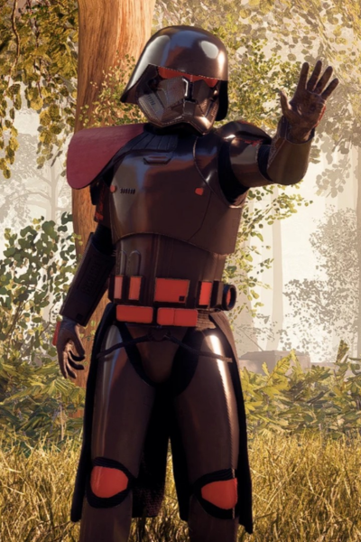
Elite infantry units attached directly to the Templar Order. Equipped with specialized force-resistant armor weaving, sonic weaponry, and slugthrowers explicitly chosen to bypass lightsaber deflection. They overwhelm force-sensitive targets through sheer volume of unblockable fire, saturating the battlefield with kinetic rounds while Templar Knights move in for the kill.
ROYAL SHADOW GUARD
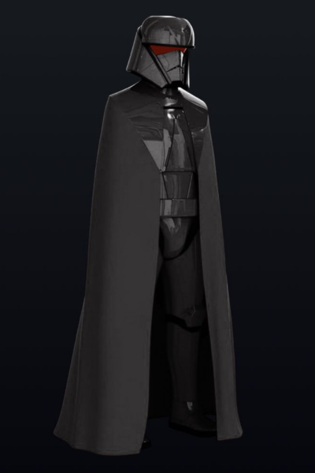
Covert operatives and assassins serving Emperor Thorne directly. Possessing latent dark side abilities trained by the Templars, they wield lightsaber pikes and utilize advanced personal cloaking technology for infiltration and assassination missions. They are the unseen blade in the dark, deployed when no formal military action can be acknowledged.
GROUND FORCES DOSSIER
Galactic Imperium Stormtrooper Corps & Imperial Army, Unit Classification Files
STORMTROOPER CORPS
HUMAN / HUMANOID ONLYThe elite offensive arm of the Galactic Imperium. Formed from volunteers and selected conscripts who meet rigorous physical and psychological standards. All Corps troopers operate under unified command doctrine and utilize standardized equipment upgrades. Restricted to humans and near-human humanoids per Imperial Compromise Charter 12-ABY.
IMPERIAL STORMTROOPER
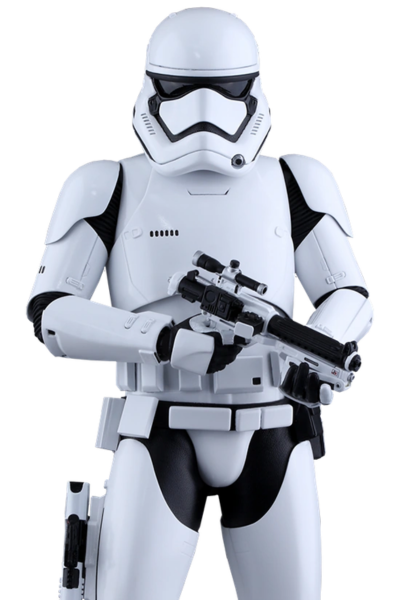
The backbone of the Galactic Imperium's offensive might and the most recognizable symbol of Imperial authority across the Northern Outer Rim. The redesigned MKII armor suite represents a significant leap over both the original Imperial stormtrooper armor and classic Clone Phase-II equipment, abandoning the latter's bulky shoulder pauldrons in favor of a sleeker, more articulated composite plating system engineered for mobility in confined shipboard and urban environments. The all-white finish is deliberate; Emperor Thorne mandated a visual break from the grime of the fallen Empire's aging armor, projecting the image of a clean, modern order. The F-11D blaster rifle features a selectable firing mode allowing single precise shots, a three-round burst for suppression, and a wide-beam stun setting for capture operations. Every Stormtrooper undergoes 18 months of intensive physical, tactical, and psychological conditioning before deployment, making them considerably more competent than the galaxy's perception of their Imperial predecessor. They are the Imperium's primary instrument of expansion and the first boots on any contested world.
STORMTROOPER OFFICER
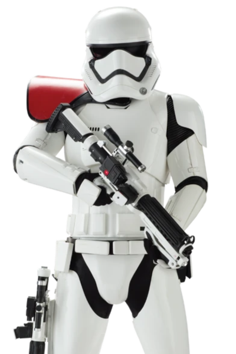
ST OFFICERDistinguished from rank-and-file Stormtroopers by their colored pauldron shoulder armor, Officers are veteran troopers elevated through merit-based promotion within Thorne's reformed Corps. Unlike the old Empire which frequently placed commissioned officers in non-combat leadership roles, Imperium Stormtrooper Officers are expected to lead from the front. They carry enhanced command-grade HUD systems feeding them real-time tactical overlays, unit disposition readouts, and direct links to air support request channels. Their encrypted comms gear allows them to coordinate across multiple squads simultaneously, calling fire missions from AT-STs or LAAT gunships. The black pauldron denotes Sergeant-grade command of a squad (10–12 troopers), while the full white pauldron marks Platoon Lieutenants. Officers who demonstrate exceptional tactical judgment are fast-tracked into the Imperium's Officer Training Command on Bastion.
HEAVY ASSAULT STORMTROOPER
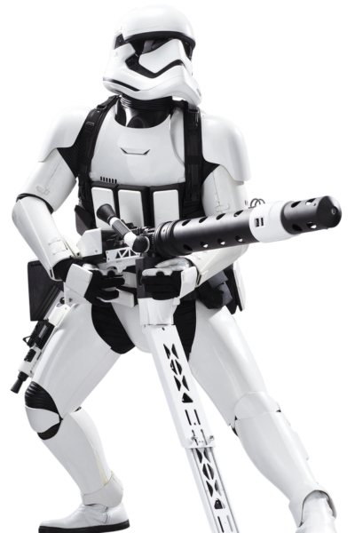
Every standard Stormtrooper squad is assigned one Heavy Assault specialist, whose primary duty is to project overwhelming suppressive fire and provide organic anti-armor capability at the squad level. The FWMB-10B repeating blaster cannon is a bulky but devastatingly effective weapon system capable of sustained high-volume fire that can shred light cover, suppress enemy positions, and threaten lightly armored vehicles like AT-RTs, repulsorlift scouts, and ground speeders. The weapon's tripod attachment transforms it into a static emplacement gun capable of area denial, while the shoulder-fire configuration allows the heavy trooper to advance with the squad, albeit at reduced accuracy. Their reinforced armor plating, particularly around the chest and upper shoulders, is designed to absorb stray fire while they maintain their position. Heavy troopers undergo extensive training specific to their weapon system and are among the most physically imposing members of any assault element.
IMPERIAL SCOUT TROOPER
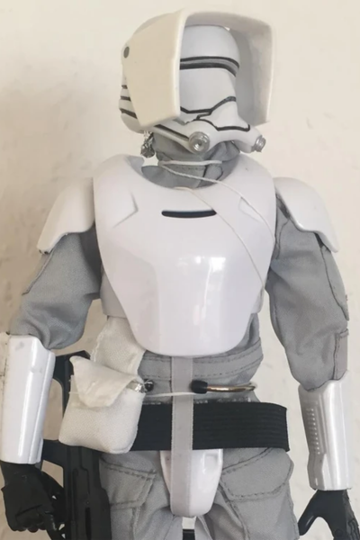
Scout Troopers are the Imperium's eyes and ears, deployed ahead of any major assault element to map terrain, identify defensive positions, and eliminate isolated sentries or command figures before the main thrust begins. Their partial-coverage lightweight armor sacrifices protection for speed and endurance, a Scout can cover terrain a fully armored line trooper cannot. Their visor systems feature multi-spectrum imaging, thermal overlay, and long-range ranging capability feeding precise targeting data to the Valken-38X, a precision blaster rifle capable of defeating personal energy shields at range. Most Scout Troopers are paired with 74-Z speeder bikes, allowing rapid repositioning across the battlefield. Scouts are among the most independently operational troopers in the Corps; they frequently operate for days in hostile territory without support, requiring a higher degree of initiative and self-sufficiency than standard line infantry.
FLAMETROOPER
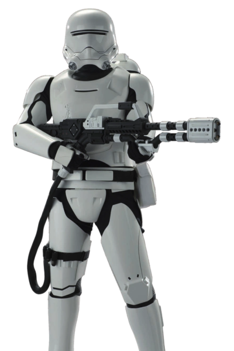
One of the most feared and psychologically effective weapons in the Imperium's ground arsenal, the Flametrooper specializes in the most brutal form of close-quarters combat: rooting enemies out of fortified positions, bunkers, trenches, and dense jungle terrain where blaster fire is suppressed by cover. The D-93 Incinerator projects a sustained stream of superheated accelerant that clings to surfaces and ignites atmosphere within enclosed spaces, bypassing conventional armor plating through sheer thermal transfer. The flametrooper's own armor features substantial upgrades to thermal insulation, the helmet visor is reinforced with heat-resistant transparisteel, while a full fire-retardant under-suit protects the wearer from blowback. Flametroopers are deployed tactically as part of assault pioneer elements, typically advancing after the initial blaster exchange to flush out hardpoints that standard infantry cannot crack. The psychological impact of their presence alone often breaks enemy morale before a shot is fired.
SNOWTROOPER
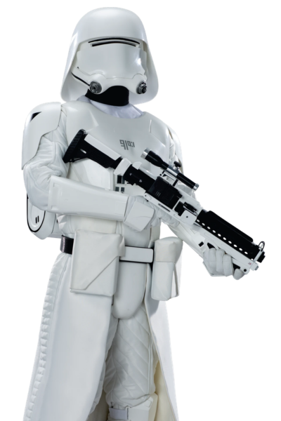
The Galactic Imperium controls swaths of the Northern Outer Rim, where ice worlds, tundra planets, and high-altitude mountain chains are common terrain. The Snowtrooper represents the Imperium's environmental specialization doctrine: rather than deploy standard troopers into lethal cold and rely on morale, certain units are permanently equipped and trained for these conditions. The Snowtrooper's distinguishing feature is the bulky thermal polymer outer shell draped over their standard MKII plating, a layered ceramic-polymer composite that traps body heat while resisting blaster bolt superheating. The face-concealing breath mask processes sub-zero air, warming it to safe inhalation temperature while filtering particulates. Their boots feature integrated crampons for ice traversal, and their weapons are configured with temperature-resistant lubricants and insulated power packs to function in environments that would render standard equipment unreliable. Standard Stormtroopers can operate briefly in cold environments; Snowtroopers thrive in them.
JET TROOPER
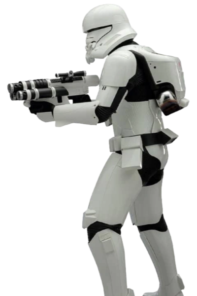
Jet Troopers represent one of Emperor Thorne's most significant tactical innovations, reviving and modernizing the concept of combat jump infantry last seen widely deployed in the Grand Army of the Republic era. The JETRC-I integrated jet pack system is built directly into the trooper's backplate rather than attached externally, creating a more aerodynamic profile that reduces the risk of pack damage in combat. Jet troopers are capable of true hovering flight for up to 90 continuous seconds and near-unlimited micro-burst hops for repositioning, giving them unparalleled three-dimensional mobility on the battlefield. Their signature tactic is the vertical envelopment, bypassing fortified ground-level approaches entirely by attacking from above rooftops, cliffs, or orbital drop insertions. The wrist-mount micro-missile launcher provides direct-fire anti-vehicle capability, making each Jet Trooper individually a significant threat to light armor and air defense emplacements.
RIOT CONTROL STORMTROOPER
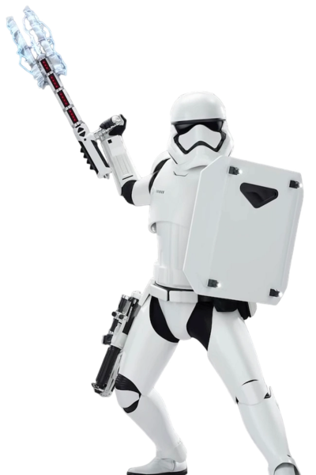
Emperor Thorne's insistence on a more palatable public face for the Imperium does not preclude the necessity of hard suppression when civilian compliance fails. The Riot Control Stormtrooper bridges the gap between lethal force and non-lethal pacification, giving local garrison commanders a proportional response tool for civil unrest that avoids the mass-casualty events Tarkin-era governors normalized. The Z6 Riot Control Baton is the defining weapon of this unit, a two-handed staff capable of delivering either a paralytic charge that temporarily incapacitates without permanent injury, or a standard high-impact strike mode for direct threat suppression. Critically, the Z6 baton's design incorporates cortosis weave in its striking surface, a rare material that can disrupt and temporarily short-circuit a lightsaber blade on contact. This was not accidental; Intelligence assessments following the Yavin 4 campaign confirmed Jedi infiltration as a realistic threat, making the Riot Control Trooper an unexpected but effective anti-Jedi contingency resource at the garrison level.
DEATH TROOPER
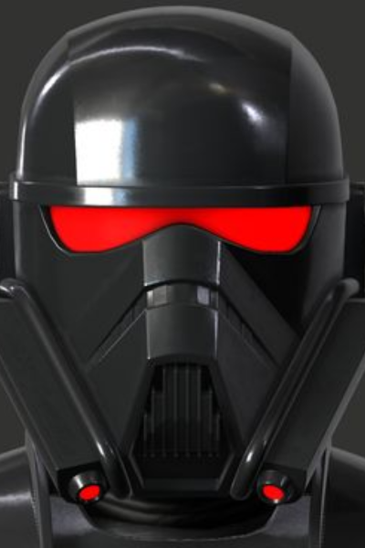
Death Troopers are the Imperium's most elite and feared ground-combat asset, the black-armored operators who appear wherever the Imperium needs a guarantee. Exact selection and augmentation protocols are classified at the Alpha Command level, but intelligence assessments suggest candidates undergo physical augmentation including sub-dermal armor mesh implants, reflex-enhancement stimulants, and encrypted neural comms that allow silent squad-level communication. Their all-black armor is fabricated from a proprietary composite alloy lighter than standard MKII plating but with superior ballistic resistance. Death Troopers serve in two capacities: as bodyguards attached to Moffs, Grand Admirals, and command-level personnel who operate in contested zones; and as offensive black operations assets deployed when the Imperium needs an action that cannot be traced back to conventional military command. Their encrypted comms make them effectively invisible on standard Imperial communication intercepts, and their combat training represents the pinnacle of what unaided human biology can achieve.
IMPERIAL THRONE GUARD
COMMAND AUTHORITY: EMPEROR THORNE DIRECTDistinct from and superior in authority to the Stormtrooper Corps, the Imperial Throne Guard answers exclusively to Emperor Thorne and the Imperial Palace command on Bastion. Their mandate is the protection of the Emperor, the Imperial Throne, and the most critical Imperial installations in the galaxy.
ROYAL TROOPER
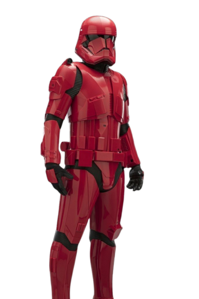
Royal Troopers are the prestige heavy infantry unit of the Throne Guard, distinguished by the crimson accent trim on their otherwise standard-white MKIII plating, a visual marker that carries enormous authority in the Imperial hierarchy. To be assigned as a Royal Trooper is considered the highest posting available to an enlisted Stormtrooper, requiring a minimum of five years of active corps service, an unblemished conduct record, and passage through the Palace Guard Selection Course on Bastion, a brutal evaluation covering close-quarters combat, threat assessment, loyalty verification, and advanced tactical scenarios. They are stationed permanently at key Imperial sites: the Bastion Imperial Palace, Emperor Thorne's personal dreadnought, and a handful of strategically critical fortress worlds. Their MKIII plating incorporates cortosis weave panels in the chest cavity specifically to counter lightsaber-bearing threats, a precaution that reflects lessons learned during the Yavin 4 campaign. Royal Troopers are not ceremonial; they are combat-hardened soldiers who happen to be posted to positions of enormous political sensitivity.
ROYAL PRAETORIAN GUARD
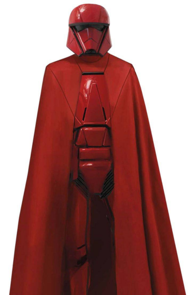
The Royal Praetorian Guard are the Emperor's living shadow, chosen from the finest warriors the Royal Trooper Corps can produce and subjected to years of additional conditioning that strips away every instinct save one: protect the Emperor at any cost. They are not soldiers in the conventional sense. In public, they are statues — motionless crimson figures flanking the throne, present at every formal audience, every diplomatic reception, every imperial procession, never speaking, never reacting, their expressionless helmets giving nothing away. This stillness is itself a weapon; it unnerves foreign dignitaries and visiting commanders more than any aggressive display could. Their crimson robes and armor are an unmistakable visual echo of Palpatine's Royal Guard, a deliberate choice by Emperor Thorne to invoke the weight of that legacy and signal continuity with the Old Empire's authority. Beneath the outer robes, reinforced armor plating provides full-body protection without sacrificing the imposing silhouette. Each Guard is assigned one of three weapon configurations: a Vibro-Voulge with heavy energy shield for reach and area denial, paired Vibro-Arbir Blades with dual energy shields for close aggression and deflection, or a two-handed Electro-Bisento with wrist-mounted launchers for raw power and suppression of Force-sensitive threats. The weapon assignments are deliberate — in combination, the Guard formation presents a complete threat matrix that no single combatant can safely counter. Unlike the purely ceremonial guards of lesser rulers, the Royal Praetorian are combat-tested killers who have earned their posting through demonstrated lethality. If the Emperor is threatened and the Royal Troopers have fallen, the Praetorian Guard do not retreat and do not negotiate. They simply close.
IMPERIAL ARMORY
Naval vessels and ground armor, Galactic Imperium military hardware database
IMPERIAL NAVY
IMPERIAL III-CLASS STAR DESTROYER
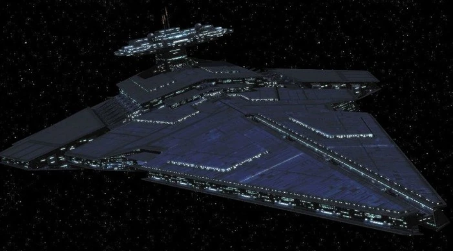
| LENGTH | 1,600 Meters |
|---|---|
| HYPERDRIVE | Class 1 Primary / Class 15 Backup |
| CREW | 9,235 (40% reduction via automation) |
| TROOPS | 2,150 Stormtroopers |
| COMPLEMENT | 72 TIE/fo Fighters, 24 TIE/D Automated, 18 Bombers, 12 LAAT/I Gunships, 8 Walkers |
| ARMAMENT | Octuple Barbette Turbolasers (8x), Heavy Ion Cannons (6x), Point Defense Batteries (32x), Assault Torpedo Tubes (4x) |
| SHIELDING | Reinforced Deflector Array, 400% improvement on ISD-II |
| SPECIAL FEATURES | Shielded Command Tower, Advanced Sensor Array, Fleet Battle Control |
The culmination of three decades of Imperial naval engineering, the Imperial III-class Star Destroyer is the prestige warship of the Galactic Imperium's fleet and the most feared vessel-class in the northern galaxy. The ISD-III corrects nearly every significant flaw of its predecessor line: the exposed command tower has been reinforced and fully shielded, ending the critical vulnerability that New Republic starfighters exploited at Endor and Jakku. Crew requirements have been slashed by roughly forty percent through a pervasive automation doctrine integrating advanced droid-assisted fire control, automated damage control systems, and networked sensor fusion that allows a smaller command team to exercise equivalent battlefield awareness to the bloated crews of ISD-I and ISD-II vessels. The massive octuple barbette turbolasers, project enough destructive energy to threaten capital ships at ranges that place the Destroyer itself beyond most standard battery effective range. A fully operational ISD-III is considered by New Republic intelligence analysts to be the single most capable capital ship in the known galaxy outside of the largest Mon Calamari cruisers.
IMPERIAL NEBULON-B FRIGATE
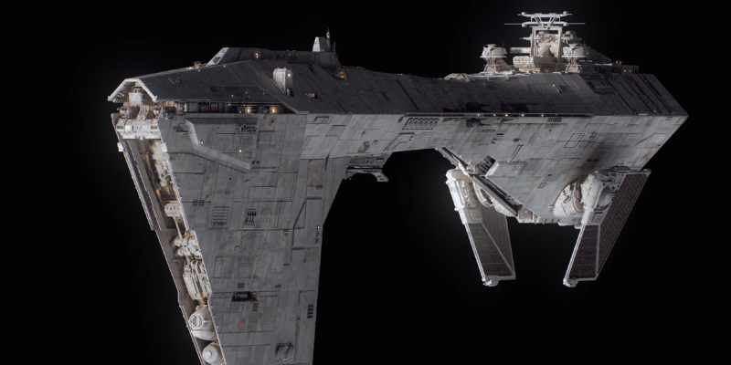
| LENGTH | 300 Meters | HYPERDRIVE | Class 2 |
|---|---|---|---|
| CREW | 920 | COMPLEMENT | 24 TIE Fighters, 4 Gunships |
| ARMAMENT | 12 Turbolaser Batteries, 12 Laser Cannons, 2 Tractor Beams | ||
Heavily armored refit of the classic EF76 Nebulon-B design, serving as the Imperium's premier anti-starfighter escort frigate. The refit addresses the original's notorious structural vulnerability at the boom section with internal reinforcement bracing, and replaces its dated fire control with modern target-tracking suites capable of tracking multiple small craft simultaneously. Standard assignment is 2–4 frigates per Star Destroyer battlegroup, providing a defensive perimeter against starfighter strikes and bomber runs on the capital vessel.
TIE/IN INTERCEPTOR
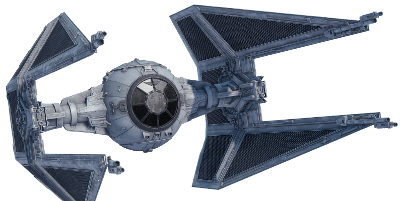
| LENGTH | 9.2 Meters | CREW | 1 Pilot |
|---|---|---|---|
| MAX SPEED | 1,250 km/h (atm) | SHIELDS | Retrofitted Deflector Shield (Imperium Refit) |
| ARMAMENT | 4x Laser Cannons (Wing-Tip Mounted), Targeting Computer, Enhanced Avionics Suite | ||
The TIE/IN Interceptor was the Empire's finest mass-produced starfighter at the time of its fall, and Emperor Thorne recognized that superiority worth preserving. The Interceptor's arrow-shaped solar collection wings grant it significantly greater speed and maneuverability than the standard TIE/ln, and its four wing-tip laser cannons give it considerably more raw firepower per pass. The Imperium's refit program addresses the Interceptor's only significant weakness: the original design carried no deflector shielding, a deliberate cost-cutting choice by the old Empire that made skilled pilots expendable. Thorne's engineers have integrated a compact shield generator into the fuselage at the cost of a marginal reduction in top speed, a trade the Imperium's doctrine considers non-negotiable. The resulting platform is the fastest shielded fighter in the Imperium's active inventory. TIE/IN squadrons are assigned to elite carrier wings and tasked with high-speed intercept duties, escort of high-value assets, and hunting enemy aces that standard line fighters cannot run down.
TIE/D AUTOMATED FIGHTER
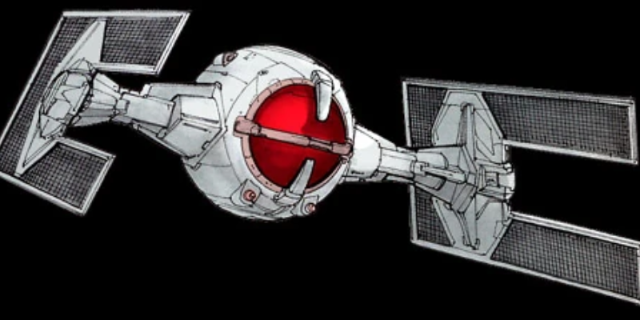
| LENGTH | 7.2 Meters | CREW | None, Droid AI |
|---|---|---|---|
| G-LIMIT | Unlimited (No Pilot) | SHIELDS | None |
| ARMAMENT | 4x Laser Cannons // AI Targeting System, No reaction delay | ||
The TIE/D sacrifices the pilot-preservation philosophy of the TIE/fo for pure, unflinching combat performance. Carrying no life-support, no ejection system, and no biological limitation, the TIE/D's AI can execute maneuvers at G-forces that would kill a human pilot outright, and its reaction time in targeting solutions operates at machine speed. It is deployed in mass swarms ahead of piloted TIE/fo formations, overwhelming enemy fighter screens through attrition while the crewed craft engage priority targets. The Imperium's heavy investment in automation philosophy across its military makes the TIE/D a natural fit; it represents the galaxy's first successful large-scale deployment of autonomous combat starfighters since the Confederate Droid tri-fighter era, without the networked vulnerability that made CIS droid armies fragile.
TIE/SA HEAVY BOMBER
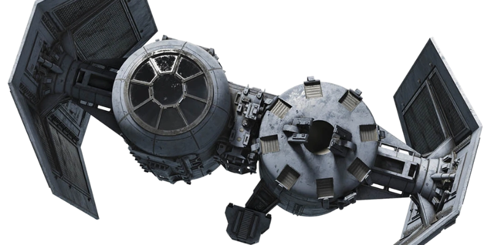
| LENGTH | 7.8 Meters | CREW | 1 Pilot |
|---|---|---|---|
| MAX SPEED | 850 km/h (atm) | SHIELDS | Onboard Deflector (Upgraded) |
| ARMAMENT | 2x Laser Cannons, 16x Proton Torpedoes, 8x Concussion Missiles, Seismic Charge Bay (4x) | ||
The Imperium's TIE/sa bomber is the fleet's primary heavy ordnance delivery platform, tasked with capital ship strikes, planetary bombardment support, and asteroid field interdiction. Its distinctive twin-pod hull separates the cockpit module from the bomb bay entirely, eliminating the risk of ordnance sympathetic detonation killing the crew. The upgraded shield generator — absent on the original Empire's TIE/sa — dramatically improves crew survivability during attack runs through point-defense fire. Standard loadout carries a mix of proton torpedoes for hardened targets, concussion missiles for surface emplacements, and rare seismic charges for mine-laying operations in contested transit corridors. TIE/sa squadrons are typically held in reserve aboard Star Destroyers, launched only once TIE/fo screens have established air superiority or when an assault target requires ordnance heavier than starfighter cannons can deliver.
UPSILON-CLASS COMMAND SHUTTLE
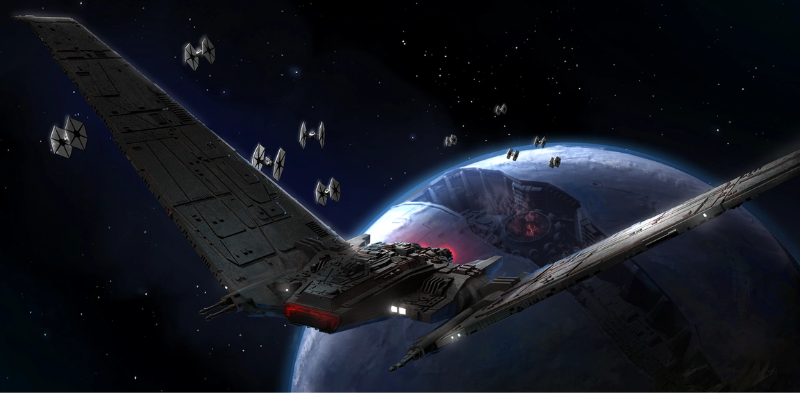
| LENGTH | 37.2 Meters | HYPERDRIVE | Class 1.5 |
|---|---|---|---|
| CREW | 2 Pilots + 2 Systems Officers | PASSENGERS | Up to 14 Command Personnel |
| ARMAMENT | 4x Heavy Laser Cannons (Wing-Tip), 1x Point Defense Cannon (Ventral), Sensor Jamming Suite | ||
The Upsilon-class replaces the aging Lambda shuttle in the Imperium's command transport role, offering substantially improved armament, a more powerful deflector shield system, and an advanced sensor and communications package suited to command-level missions. Its most defining feature is the large folding fin assembly, which when extended houses a powerful active sensor array capable of scanning surrounding space for threats out to 150 kilometers — making the Upsilon effectively its own early-warning system during high-value transport operations. The shuttle is assigned exclusively to Imperial officers of General rank and above, Templar Knights, and the Emperor's personal envoys. Its sensor jamming suite allows it to mask the identity and transponder signature of anyone aboard, a capability critical when transporting high-value personnel through contested territory.
RAIDER-CLASS CORVETTE
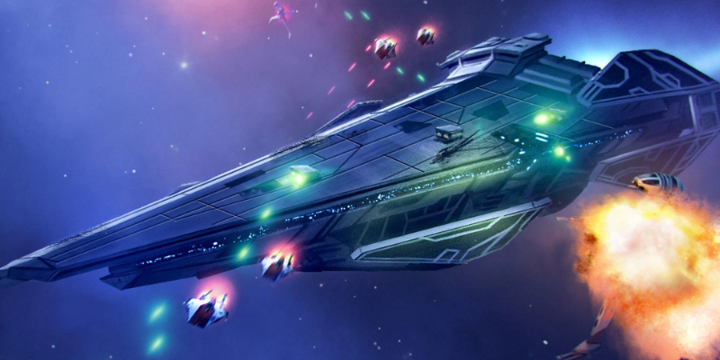
IMAGE SLOT — NV-007
Replace src attribute with image URL
| LENGTH | 150 Meters | HYPERDRIVE | Class 2 |
|---|---|---|---|
| CREW | 180 | COMPLEMENT | 2 TIE/fo Fighters |
| ARMAMENT | 8x Laser Cannons, 4x Concussion Missile Tubes, 2x Tractor Beams | ||
The Raider-class Corvette fills the Imperium's critical need for a fast, independent patrol and interdiction vessel capable of operating without capital ship support. At 150 meters it is far smaller than even the Nebulon-B frigate, but its speed and agility exceed any vessel in its weight class. The Raider is the primary anti-piracy and blockade runner interdiction platform across the Imperium's frontier holdings, where a full Star Destroyer battlegroup would be logistically excessive. It carries a limited TIE complement for reconnaissance and pursuit, and its tractor beam array allows it to halt and board fleeing smugglers or blockade runners without destruction. Raider squadrons of four to six vessels are commonly assigned to sector governors for independent enforcement operations, making them the most visible face of Imperial naval authority in outer rim holdings.
ARQUITENS-CLASS LIGHT CRUISER
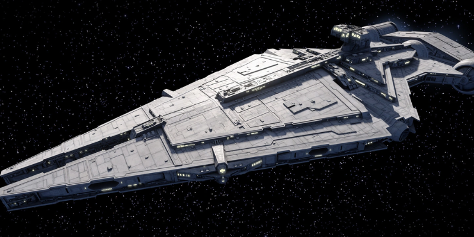
IMAGE SLOT — NV-008
Replace src attribute with image URL
| LENGTH | 325 Meters | HYPERDRIVE | Class 1.5 |
|---|---|---|---|
| CREW | 450 | COMPLEMENT | 6 TIE/fo Fighters, 2 Gunships |
| ARMAMENT | 4x Turbolaser Batteries, 4x Heavy Laser Cannons, 2x Concussion Missile Tubes, 1x Tractor Beam | ||
The Imperium's refit of the veteran Arquitens hull represents a pragmatic acknowledgment that not every patrol duty requires a Star Destroyer. The original Clone Wars-era design has been re-engined with modern Kuat Drive Yards propulsion systems, its fire control upgraded to current Imperial standards, and its crew requirements reduced by thirty percent through automation integration. Arquitens-class cruisers are the workhorses of the Imperium's sector fleets, permanently assigned to system patrol, convoy escort, and blockade enforcement duties that would tie down capital ships far better deployed at the front. Their relatively small crew makes them economical to maintain in large numbers, and the Imperium currently fields over three hundred refit hulls distributed across its controlled territories — more than any other vessel class in the fleet.
AT-AT HEAVY ASSAULT WALKER
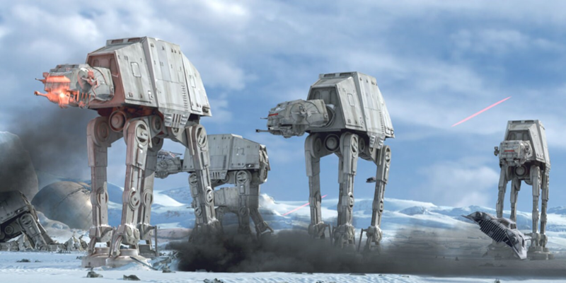
| HEIGHT | 22.5 Meters | TOP SPEED | 60 km/h |
|---|---|---|---|
| CREW | 4 + 40 Troops | ARMOR | Reinforced Durasteel, Blaster-Resistant Hull |
| ARMAMENT | 2x Medium Laser Cannons (Neck), 2x Heavy Laser Cannons (Chin), 1x Medium Blaster (Rear) | ||
Emperor Thorne's modernized AT-AT retains the iconic four-legged silhouette that defined Imperial ground power for decades, but incorporates substantial systems upgrades learned from post-Endor battlefield analysis. The neck-mounted laser cannons have been upgraded to medium-grade energy output to improve anti-infantry capability, the hull plating has been reinforced against Rebel-era anti-armor tactics including the grapple-cable attack vector that famously felled AT-ATs at Hoth. The troop bay can carry a full forty Stormtroopers and deploys them via ventral boarding ramps rather than the original's vulnerable chin-descent cables. Psychologically, the AT-AT walker remains one of the most effective terror weapons in the Imperium's arsenal: few planetary defense forces can resist the sight of a line of these behemoths walking toward their position.
AT-ST SCOUT WALKER
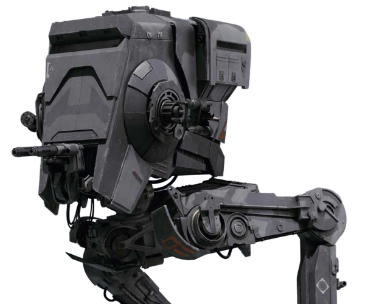
| HEIGHT | 8.6 Meters | TOP SPEED | 90 km/h |
|---|---|---|---|
| CREW | 2 (Pilot + Gunner) | PASSENGERS | None |
| CHIN WEAPONS | Twin Blaster Cannon (Primary) // Concussion Grenade Launcher (Side-Mount) | ||
| ARMOR CLASS | Reinforced Leg Armor, Anti-Cable / Anti-Entangle Treatment on Lower Joints | ||
| SPECIAL FEATURES | Urban Combat Sensor Package / Enhanced Night Vision / IFF Transponder | ||
The Imperium's AT-ST carries significant upgrades over the Empire's original design, directly addressing the tactical embarrassment of their performance in the Endor campaign. The lower leg joints now feature anti-entangle armor plating and cable-cutter tools that prevent the grapple-cable attacks that neutralized walkers against Rebel forces and Ewoks. Urban combat variants carry a dedicated sensor package for building identification, civilian-military signature differentiation, and IFF targeting to prevent friendly fire incidents in occupied cities. The AT-ST's role in the Imperium is primarily fire support for advancing infantry and urban pacification, moving ahead of Stormtrooper lines to engage fortified positions and armored vehicles that infantry weapons cannot crack. Its two-man crew system, pilot and dedicated gunner, improves target acquisition compared to the single-operator systems on early Imperial designs.
IMPERIAL LAAT/i GUNSHIP
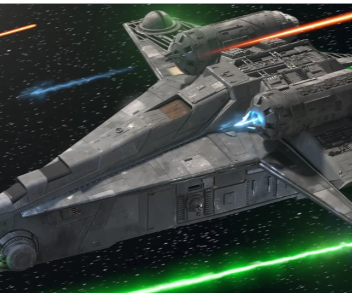
| LENGTH | 17.4 Meters | WIDTH | 17.1 Meters |
|---|---|---|---|
| CREW | 1 Pilot + 1 Co-Pilot | TROOPS | 30 Stormtroopers |
| ARMAMENT | 2x Wing Laser Cannons, 1x Chin Dual Laser Turret, 4x Composite Beam Lasers, 2x Missile Pods (8 Missiles Each) | ||
| ARMOR/SHIELDS | Closed Canopy Redesign / Thickened Hull Plating / Medium Deflector Shield | ||
| SPECIAL FEATURES | Pressurized Cabin (Low-Atmosphere Capable) / Magnetic Boarding Locks / Side-Door Rapid Deploy | ||
The Imperium's LAAT/i modernization retains the proven Rothana airframe but addresses decades of combat feedback with substantive upgrades. The most visible change is the closed canopy, the original Republic-era LAAT/i used an open-bay design that left pilots exposed to infantry fire during low-altitude insertion runs, a vulnerability that cost the GAR enormous numbers of experienced pilots. The Imperium's variant fully encloses the cockpit in armored transparisteel and extends this protection to the troop bay with reinforced sidewall plating. The missile pods have been upgraded to carry both unguided rocket salvos for area suppression and heat-seeking variants for engaging enemy speeder bikes and light vehicles. The LAAT/i remains one of the most flexible battlefield assets in the Imperium's inventory: it can deliver a full squad of Stormtroopers directly into a contested LZ while providing its own fire support during the insertion run, a capability no other Imperium ground vehicle can replicate.
TX-225 GAVw "OCCUPIER" COMBAT ASSAULT TANK
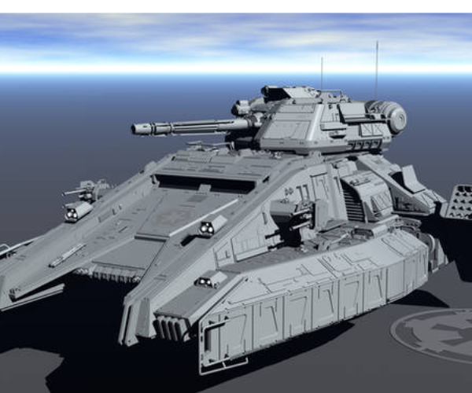
| LENGTH | 8.4 Meters | TOP SPEED | 72 km/h |
|---|---|---|---|
| CREW | 3 (Commander, Pilot, Gunner) | PASSENGERS | None |
| ARMAMENT | 1x Heavy Rotating Laser Cannon (Turret), 2x Medium Laser Cannons (Hull-Fixed), 1x Anti-Infantry Repeater (Commander Mount) | ||
| ARMOR CLASS | Heavy Reinforced Durasteel Plating, Full Underbelly Protection, IED-Resistant Skirt Armor | ||
| PROPULSION | Tracked Repulsorlift Hybrid, Terrain-Adaptive Ground Clearance System | ||
The TX-225 Occupier fills a critical gap in the Imperium's ground order of battle: a dedicated armored assault vehicle capable of urban street-level combat that a walker cannot effectively conduct. Walkers are terror weapons of the open field; the Occupier is the enforcer of the occupied city. Its low profile, tracked repulsorlift hybrid propulsion, and 360-degree rotating laser turret allow it to navigate narrow urban corridors, stack up behind intersections, and engage fortified insurgent positions that walker-scale weapons would level entire city blocks to address. The Imperium deployed TX-225 companies in every major planetary pacification operation since Thorne's ascension, and the vehicle's distinctive tracked silhouette has become synonymous with occupation in the Northern Outer Rim. Its commander-mounted anti-infantry repeater can suppress open crowds or advancing infantry independently of the primary turret, making it a formidable multi-threat platform in contested city environments.
74-Z MILITARY SPEEDER BIKE
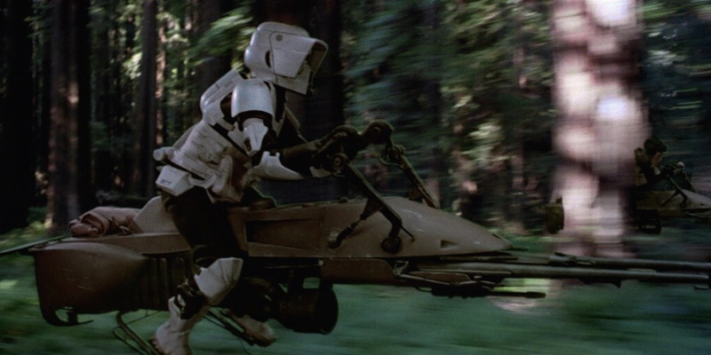
| LENGTH | 3.2 Meters | TOP SPEED | 500 km/h |
|---|---|---|---|
| CREW | 1 Rider | PASSENGERS | 1 (Optional) |
| ARMAMENT | 2x Laser Cannons (Forward Fixed), Sensor Package, Anti-Gravity Mine Rack (Optional) | ||
The 74-Z speeder bike remains in Imperium service as the primary fast-attack and reconnaissance mount for Scout Troopers, unchanged in silhouette but substantially upgraded in propulsion output and sensor integration since the original Empire era. At 500 km/h it is capable of outrunning virtually any ground vehicle short of another speeder, making it ideal for rapid perimeter coverage, high-value target pursuit, and forward scouting ahead of walker and infantry columns. Its forward-fixed laser cannons are effective against unarmored targets and light vehicles but require the rider to orient the entire bike toward the target, demanding a high skill level to engage effectively at speed. The 74-Z's primary vulnerability, its exposed rider, is partially mitigated by the Imperium's updated Scout armor and the bike's enhanced evasion capability when operated by a trained Scout Trooper.
Imperial Troop Transport (ITT)
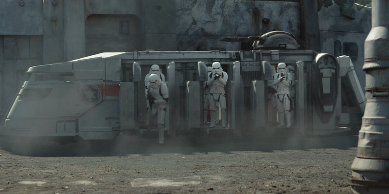
IMAGE SLOT — GV-006
Replace src attribute with image URL
| LENGTH | 8.7 Meters | TOP SPEED | 120 km/h |
|---|---|---|---|
| CREW | 2 (Driver, Gunner) | CAPACITY | 20 Stormtroopers |
| ARMAMENT | 1x Roof-Mounted Repeating Blaster Cannon, Side-Door Firing Positions (6x) | ||
The Imperial Troop Transport is the workhorse of Imperium ground occupation logistics, serving as the primary surface-level insertion and prisoner transport vehicle in any pacified urban environment. Unlike the LAAT/i which handles contested hot-zone insertions, the ITT is designed for movement through areas the Imperium already controls, deploying reinforcement squads, rotating garrison troops, and transporting detainees to processing facilities. Its repulsorlift system allows it to traverse most terrain types including flood plains and rubble fields. The roof-mounted repeating blaster cannon provides suppressive capability against ambushes, while the six side-position firing slits allow troopers to engage from within the armored hull without fully exposing themselves. ITTs are manufactured in vast quantities and distributed across every garrisoned world in the Imperium.
UNAUTHORIZED DISTRIBUTION IS PUNISHABLE BY IMPERIAL TRIBUNAL, 17 ABY